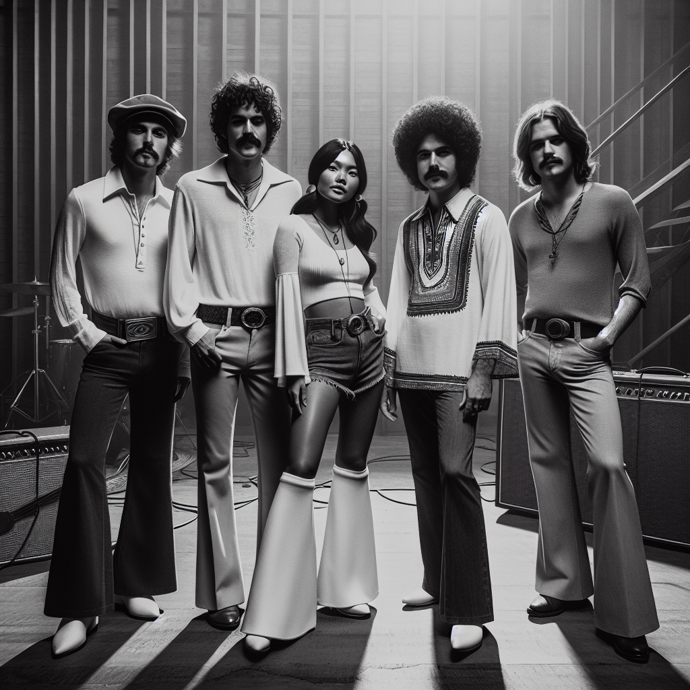

~ The Story ~
Oh man, let me tell you about Chão de Corais, the band that took Brazil by storm in '74 with their sun-bleached Tropicalia and Funk vibes. These guys weren't just a band; they were a force of nature. I was lucky enough to catch them live once, and it was like being invited to the coolest beach party ever.
The heart of the group was João "Sol" Pereira, the lead vocalist whose voice was like a gust of fresh ocean breeze. Sol was the one who brought everyone together, with his infectious charisma and knack for getting the audience to dance like nobody was watching.
Then there's Marco "Cajú" Almeida on the bass. Cajú was the laid-back groove master, always chill, always in the pocket. People said he could make anyone move with just a single bassline. He had this way of locking eyes with the crowd—he made every gig feel personal.
The beat behind it all was Luciana "Luz" Ferreira on drums. Luz was a powerhouse, a whirlwind of energy who kept everyone on their toes. She had a wild spirit, and her drumming was the pulse of Chão de Corais.
And we can't forget Paulo Andrade, the mysterious genius on synthesizer. Paulo was kinda like the mad scientist of the band, with all these crazy sounds and textures that gave their music this electric feel.
These four came together in Rio, jamming on the beaches and stumbling upon a sound that was straight-up magic. Seeing them live was unforgettable—like summer in a bottle. Long live Chão de Corais!
~ Band Photo ~

Mgmt: Chão Artists Group / Brazilian
João "Sol" Pereira, Marco "Cajú" Almeida, Luciana "Luz" Ferreira, Paulo Andrade
~ The Members ~
| João "Sol" Pereira | lead vocals |
| The heart of the group, whose voice was like a gust of fresh ocean breeze. | |
| Marco "Cajú" Almeida | bass |
| The laid-back groove master who could make anyone move with just a single bassline. | |
| Luciana "Luz" Ferreira | drums |
| A powerhouse and whirlwind of energy, whose drumming was the pulse of Chão de Corais. | |
| Paulo Andrade | synthesizer |
| The mysterious genius and mad scientist of the band, creating crazy sounds and textures. | |
~ Discography ~
| Maré Solar (1974) | |
| |
| Ritmos de Verão (1975) | |
| |
| Horizonte Selvagem (1976) | |
| |